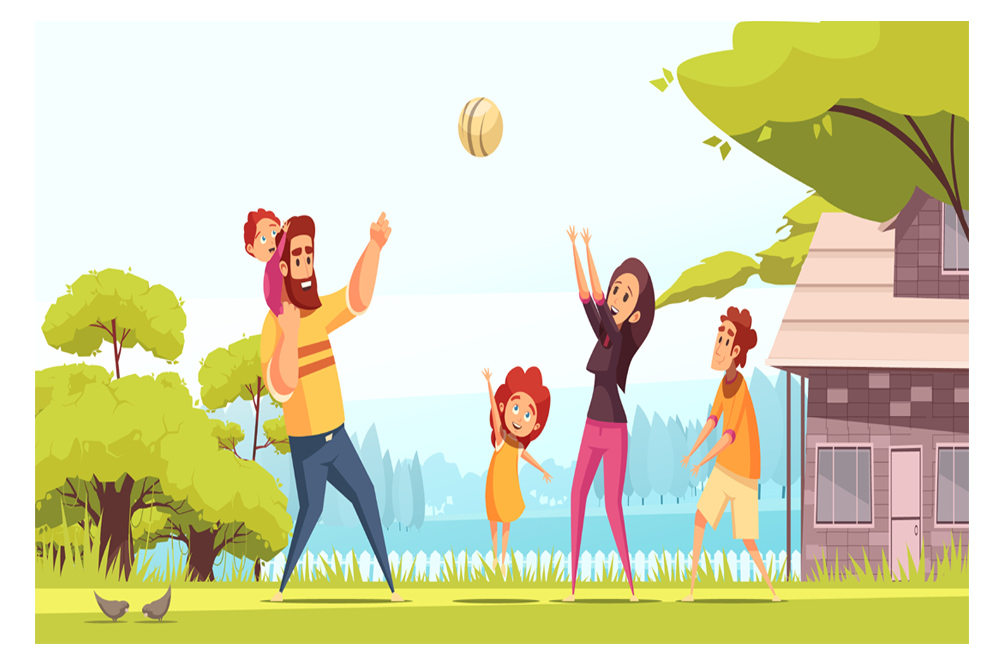

May 17, 2018

Playing certain games has been an important part of every one’s childhood memories. Be it an outdoor game like tag, hide and seek, hop and scotch or an indoor game like rock, paper, scissors, ludo or snakes & ladder, we have all had fun playing those games. Nowadays, the pressure of excelling in studies and the competition of being better puts a lot of stress on a students mind as well as their body. It is important for them to take a break once in a while and freshen their minds.
Implementing some play time in the curriculum itself can be beneficial and important to students of Schools as well as Colleges. However, games can also be used to impart knowledge in a non-traditional way. This would not only help students learn and grow but will also give them some time to enjoy. Want to introduce your kids to a fun learning experience? We at ASKMETRIP might be able to help you with that.
We at ASKMETRIP help to organize trips for Schools, Colleges as well as Corporates. Our main aim is to be able to provide students with a non-traditional and unique way of learning and studying that can also be fun at the same time. We organize a number of trips for School and College students and one of them which includes a number of fun based activities is the Fun Learn Trip.
Taking a trip or going to a place for a day or two can help break the monotonous lifestyle of students and give them a chance to relax a little and have fun. Some of the benefits of students indulging in games and fun activities are as mentioned,
1. Provides motivation.
2. Provides controlled Competitiveness.
3. Helps build Strategies.
4. Encourages Peer Positivity.
5. Reduces Stress.
6. Helps improve Memory.
7. Increases Class Cooperation.
8. Improves Attentiveness.
9. Provides New Knowledge Experience.
Knowledge and Learning doesn’t always have to be monotonous. It can also be fun and enjoyable. The Fun Learn Trip ensures that the students can get the best of both, playing and learning.
written by :